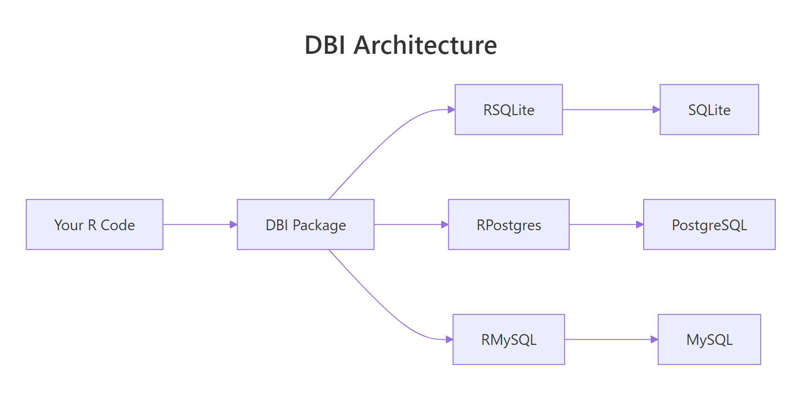
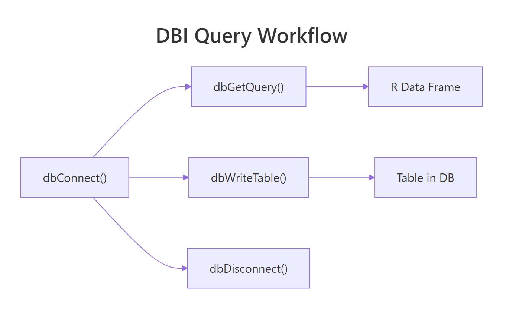
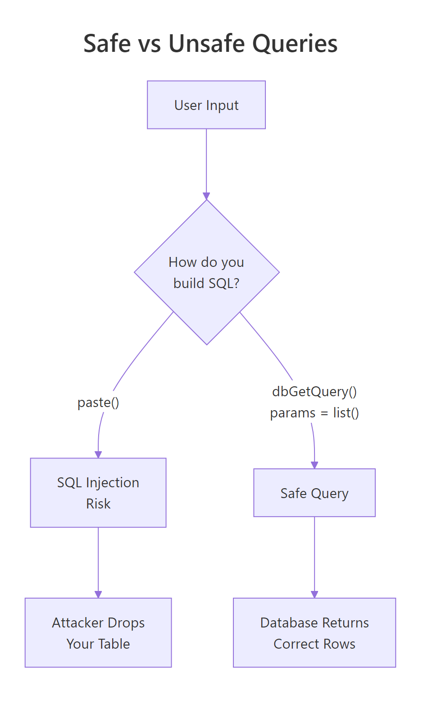

Connect R to Any Database: DBI + RSQLite, RPostgres, and RMySQL
DBI is the standard R interface to relational databases. You write the same R code — dbConnect(), dbGetQuery(), dbWriteTable() — and swap the driver package to target SQLite, PostgreSQL, MySQL, SQL Server, or anything else that speaks SQL.
Why use DBI instead of loading CSVs?
CSVs work until they don't. Once your data is too big to load into RAM, changes frequently, or lives on a server shared with other users, a database is the right tool. DBI lets you query only what you need, when you need it — without ever materialising the full table in memory. The payoff: you can run arbitrary SQL and get a data frame back in one function call.
Four functions and you have a working database workflow. The same code pattern works with a real PostgreSQL database — you only change the first line. That portability is the single biggest reason DBI exists.

Figure 1: DBI sits between your R code and the database-specific drivers. You write DBI calls; the driver package translates them to wire protocol.
RSQLite, RPostgres, or RMariaDB. The driver is what knows how to speak your database's protocol.Try it: Run this snippet in your console to create an in-memory SQLite database, write the mtcars dataset to it, and query for cars with mpg > 25.
Click to reveal solution
dbGetQuery() runs the SQL string and returns a data frame in one call. Always pair dbConnect() with dbDisconnect() to release the handle when you are done.
How do you connect to SQLite, PostgreSQL, and MySQL with DBI?
The only thing that changes between databases is the driver package and the dbConnect() arguments. Everything after connection is identical.
Three databases, three connection calls, one pattern. SQLite needs only a file path because everything lives in that one file. PostgreSQL and MySQL need credentials because they run as server processes.
Sys.getenv("PG_PASSWORD") and set the environment variable in .Renviron or your shell profile. Committing a password to Git is one of the fastest ways to leak credentials.Once connected, you can inspect what is in the database:
These two functions are your "ls" and "head" for a database connection. They work identically against every backend.
Try it: After connecting to a SQLite database, list all tables and the fields of the first table.
Click to reveal solution
dbListTables() is the database equivalent of ls(), and dbListFields() returns the column names for a single table — both work identically across every DBI backend.
How do you run queries and read results into R?
Three functions cover 95% of reading: dbGetQuery() for results into a data frame, dbReadTable() for a full table dump, and dbSendQuery() + dbFetch() for streaming large results in chunks.
dbGetQuery() is the workhorse. Feed it a SQL string, get a data frame. dbReadTable() is slightly faster when you actually want the whole table and do not need to filter.

Figure 2: Under the hood, every query goes through a send / fetch / clear cycle. dbGetQuery wraps all three into one call.
For huge result sets, stream them with dbSendQuery + dbFetch in a loop so you never load the full result into memory:
This pattern is essential for multi-gigabyte tables. You get 1,000 rows at a time, process them, and free the memory before the next batch. Always call dbClearResult() to close the statement handle — leaks here cause resource exhaustion on long jobs.
dbExecute() instead of dbGetQuery(). It returns the number of affected rows and is the right function for side-effect SQL.Try it: Run an aggregate query that counts orders per customer.
Click to reveal solution
COUNT(*) counts rows in each group defined by GROUP BY. The result comes back as a regular R data frame ready for further processing.
How do you write data from R back into the database?
dbWriteTable() writes a data frame to a new table. dbAppendTable() adds rows to an existing one. dbExecute() runs arbitrary DDL like CREATE TABLE or ALTER TABLE.
dbWriteTable(..., overwrite = TRUE) replaces an existing table; dbWriteTable(..., append = TRUE) adds to it — equivalent to dbAppendTable(). The explicit append function is clearer.
For schema changes, drop down to raw SQL with dbExecute():
The [1] 0 is the affected-row count; DDL statements return 0 because no data rows are changed.
dbWriteTable() does type inference from your R data frame — integers become INT, doubles become REAL, character becomes TEXT. For precise control, create the table yourself with dbExecute(CREATE TABLE ...) and then use dbAppendTable() to populate it.Try it: Write a small data frame to SQLite, then append two more rows.
Click to reveal solution
dbWriteTable() creates the table from the first data frame; dbAppendTable() adds more rows to the existing table without changing its schema.
How do you use parameterised queries to prevent SQL injection?
Never, ever, build SQL with paste0() or sprintf() from user input. If the input contains a quote or semicolon, your query breaks — or worse, does something you never intended. Parameterised queries separate the SQL template from the values, and the driver quotes the values correctly.

Figure 3: Paste-based queries let user input become part of the SQL statement. Parameterised queries treat input as data. Always use the right side.
? is the SQLite placeholder. PostgreSQL uses $1, $2; the driver handles the dialect automatically when you pass params = list(...). Either way, the values are transported separately from the SQL text and cannot be misinterpreted as code.
The classic injection example:
No match, no error, no injection. The quote inside the name is treated as part of the data.
paste0() for the WHERE clause, you have an injection vulnerability. Parameterised queries are the only correct fix.Try it: Use a parameterised query to find users older than a given age.
Click to reveal solution
The ? placeholder is filled in by the value in params. Because the value travels separately from the SQL text, the driver quotes it correctly and SQL injection is impossible.
How does dbplyr let you use dplyr syntax on SQL tables?
dbplyr translates dplyr verbs into SQL and sends them to the database. You write familiar R code; the database runs the actual computation. This is the best of both worlds — dplyr's ergonomics plus the database's query planner.
Two key ideas. First, tbl(con, "name") returns a lazy reference. No data is fetched until you call collect(). Second, show_query() lets you see exactly what SQL dbplyr generated — useful for debugging and for learning SQL itself.
Lazy evaluation means you can chain a dozen dplyr steps and the database optimizes the whole thing as a single query. You never pull the raw table into R until the final summary, which is often small.
collect() only at the end of your pipeline, after filtering and aggregation have shrunk the data. Calling collect() early defeats the whole purpose — you load the entire table into RAM.Try it: Use dbplyr to compute the average delay per origin airport, then collect the result.
Click to reveal solution
tbl() returns a lazy reference; the dplyr verbs translate to SQL and only execute when collect() pulls the result back into R as a tibble.
How do you manage connections and transactions safely?
Connections are a finite resource. Forgetting to close one slowly leaks memory and eventually breaks the database server. The defensive pattern is on.exit(dbDisconnect(con)) immediately after opening.
Even if dbGetQuery() throws an error, on.exit() ensures the connection is closed. This is the R equivalent of Python's with / try-finally.
For multi-statement operations, use a transaction so partial failures do not leave the database in a half-updated state:
dbWithTransaction() runs the block inside BEGIN / COMMIT. If any statement throws, everything is rolled back automatically. This is exactly what you want for "debit this account, credit that one" — either both happen, or neither does.
Try it: Wrap two inserts in a transaction so that either both succeed or neither does.
Click to reveal solution
dbWithTransaction() wraps the block in BEGIN/COMMIT. If either insert throws an error, both are rolled back, leaving the table in its original state.
Practice Exercises
Exercise 1: Filter and aggregate
Using an in-memory SQLite database with the mtcars dataset, return the average mpg per number of cylinders.
Solution
Exercise 2: Parameterised search
Write a function that takes a minimum mpg and returns matching cars safely.
Solution
Exercise 3: dbplyr pipeline
Translate this SQL to dbplyr: SELECT cyl, MAX(hp) FROM mtcars WHERE am = 1 GROUP BY cyl.
Solution
Complete Example
An end-to-end workflow: create a database, load data, query with dbplyr, write the summary back.
Five DBI calls (dbConnect, dbWriteTable twice, dbListTables, and the implicit dbSendQuery behind collect()), plus a dplyr pipeline — zero raw SQL. The whole workflow is portable: point the driver at PostgreSQL and it runs unchanged.
Summary
| Task | Function |
|---|---|
| Open connection | dbConnect(driver, ...) |
| Close connection | dbDisconnect(con) |
| List tables | dbListTables(con) |
| List columns | dbListFields(con, "name") |
| Run SELECT | dbGetQuery(con, sql) |
| Run INSERT/UPDATE/DDL | dbExecute(con, sql) |
| Read whole table | dbReadTable(con, "name") |
| Write new table | dbWriteTable(con, "name", df) |
| Append rows | dbAppendTable(con, "name", df) |
| Parameterised query | dbGetQuery(con, sql, params = list(...)) |
| Transaction | dbWithTransaction(con, { ... }) |
| dplyr reference | tbl(con, "name") |
| Fetch from lazy | collect() |
| Inspect generated SQL | show_query() |
Four rules:
- DBI + a driver. Always install both (
RSQLite,RPostgres,RMariaDB). - Always parameterise. Never paste user input into SQL strings.
- Always disconnect. Use
on.exit(dbDisconnect(con))in every function. - dbplyr is the easy mode. Write dplyr, let it generate the SQL.
References
- DBI package reference
- RSQLite reference
- RPostgres reference
- dbplyr package site
- R for Data Science, 2e — Databases chapter
Continue Learning
- dplyr filter() and select() — the local dplyr knowledge you already have translates to dbplyr.
- dplyr group_by() and summarise() — both verbs work unchanged on database tables.
- Importing Data in R — when the source is a flat file, not a database.